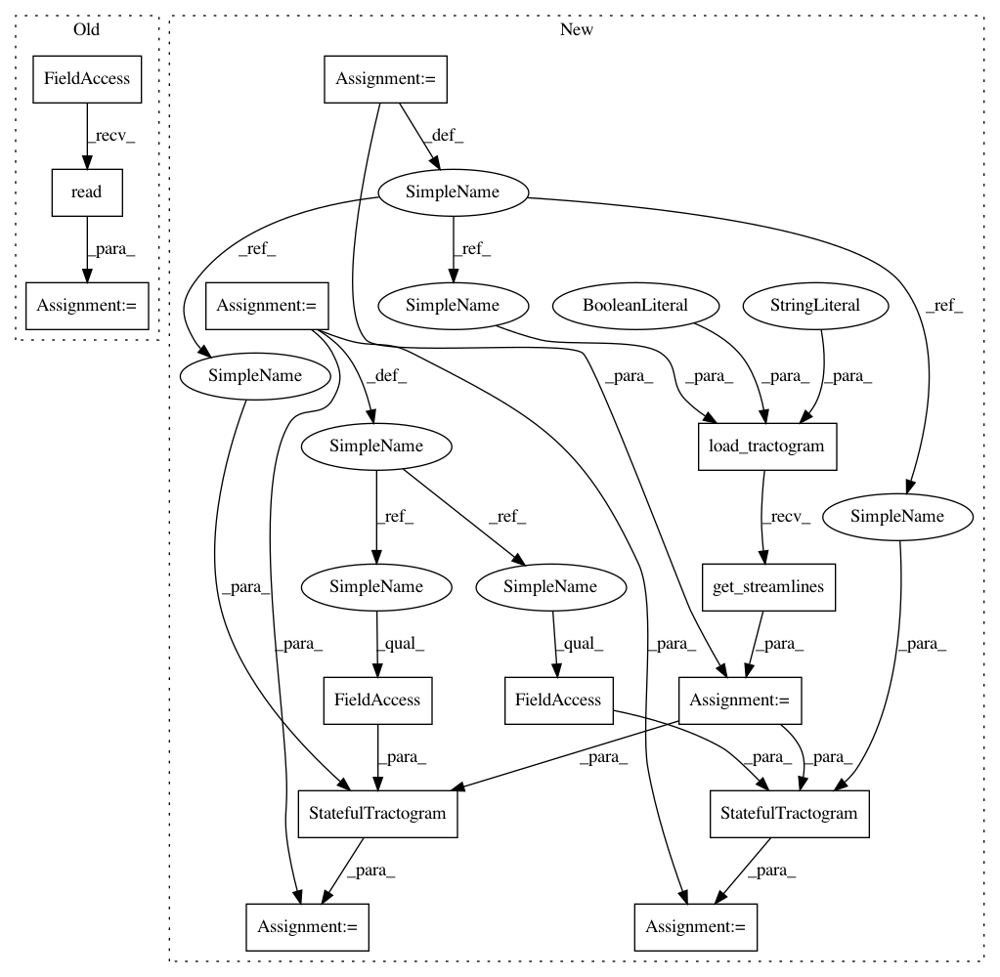

23a07e8601cbdba5ece453864bc6d11e3431543e,dipy/workflows/tests/test_stats.py,,test_bundle_analysis_population_flow,#,72
Before Change
with TemporaryDirectory() as dirpath:
streams, hdr = nib.trackvis.read(get_fnames("fornix"))
fornix = [s[0] for s in streams]
f = Streamlines(fornix)
After Change
def test_bundle_analysis_population_flow():
with TemporaryDirectory() as dirpath:
data_path = get_fnames("fornix")
fornix = load_tractogram(data_path, "same",
bbox_valid_check=False).get_streamlines()
f = Streamlines(fornix)
mb = os.path.join(dirpath, "model_bundles")
sub = os.path.join(dirpath, "subjects")
os.mkdir(mb)
sft = StatefulTractogram(f, data_path, Space.RASMM)
save_tractogram(sft, os.path.join(mb, "temp.trk"),
bbox_valid_check=False)
os.mkdir(sub)
os.mkdir(os.path.join(sub, "patient"))
os.mkdir(os.path.join(sub, "control"))
p = os.path.join(sub, "patient", "10001")
os.mkdir(p)
c = os.path.join(sub, "control", "20002")
os.mkdir(c)
for pre in [p, c]:
os.mkdir(os.path.join(pre, "rec_bundles"))
sft = StatefulTractogram(f, data_path, Space.RASMM)
save_tractogram(sft, os.path.join(pre, "rec_bundles", "temp.trk"),
bbox_valid_check=False)
os.mkdir(os.path.join(pre, "org_bundles"))
sft = StatefulTractogram(f, data_path, Space.RASMM)
save_tractogram(sft, os.path.join(pre, "org_bundles", "temp.trk"),
bbox_valid_check=False)
os.mkdir(os.path.join(pre, "measures"))
In pattern: SUPERPATTERN
Frequency: 3
Non-data size: 14
Instances
Project Name: nipy/dipy
Commit Name: 23a07e8601cbdba5ece453864bc6d11e3431543e
Time: 2019-07-23
Author: francois.m.rheault@usherbrooke
File Name: dipy/workflows/tests/test_stats.py
Class Name:
Method Name: test_bundle_analysis_population_flow
Project Name: nipy/dipy
Commit Name: 23a07e8601cbdba5ece453864bc6d11e3431543e
Time: 2019-07-23
Author: francois.m.rheault@usherbrooke
File Name: dipy/stats/tests/test_analysis.py
Class Name:
Method Name: test_ba
Project Name: nipy/dipy
Commit Name: 23a07e8601cbdba5ece453864bc6d11e3431543e
Time: 2019-07-23
Author: francois.m.rheault@usherbrooke
File Name: dipy/workflows/tests/test_align.py
Class Name:
Method Name: test_slr_flow
Project Name: nipy/dipy
Commit Name: 23a07e8601cbdba5ece453864bc6d11e3431543e
Time: 2019-07-23
Author: francois.m.rheault@usherbrooke
File Name: dipy/workflows/tests/test_stats.py
Class Name:
Method Name: test_bundle_analysis_population_flow